At the Digital Humanities 2019 conference in Utrecht, the Netherlands, I presented with Bill Kretzschmar on ways to visualize a lot of phonetic data.
The Gazetteer of Southern Vowels
The first half of the presentation was essentially me showcasing the Gazetteer of Southern Vowels (or GSV), a website I created in Shiny to help visualize 1.3 million acoustic measurements from the Digital Archive of Southern Speech.The full web address is http://lap3.libs.uga.edu/ u/jstanley/vowelcharts/, but I’ve got a redirect at joeystanley.com/gsv that’s easier to type. In the talk I spend most of the time in the “Vowel Plot Comparison” tab (below) and show how you can interact with the data.
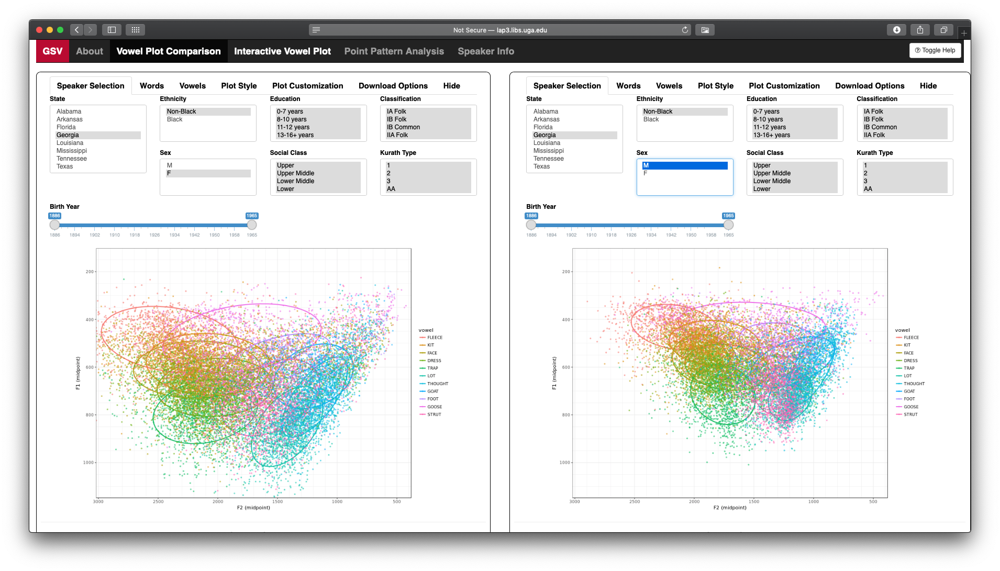
First, you can subset the data by demographic factors. The Speaker Selection tab has menu items for speakers’ sex, age, ethnicity, home state, social class, and a couple other variables. When you select one or more of these, the plot automatically updates to reflect that subset.
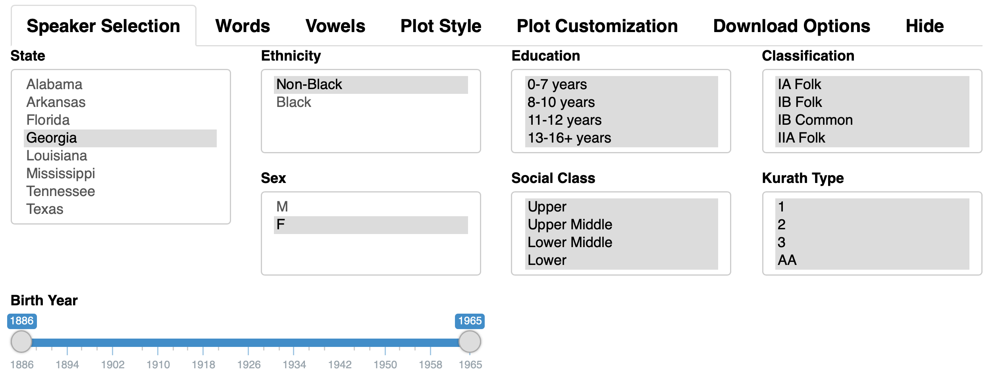
You can also subset the data by linguistic factors. In the Words tab, you’ll see that a list of stopwords is displayed and that those are excluded by default. You can add to or remove words from that stoplist, or switch it so display only those words (or some other set of words like numbers or colors).
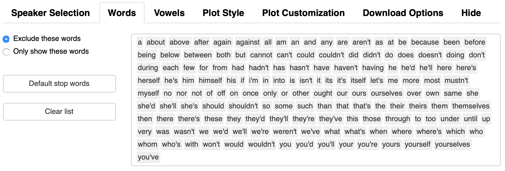
In the Vowels tab, you’ve got a whole bunch of options. First, you can choose what vowel is being displayed, what kind of stress it can have, and what its phonetic environment is(based on following segment only). There are some methodological choices too, like ways of filtering and normalizing the data. You can also choose what transcription system is being used.
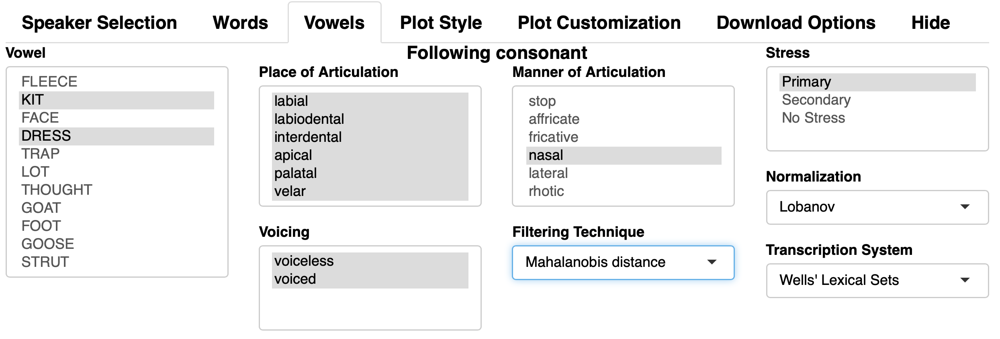
Then, there are ways for you to customize the plot. The Plot Style tab as four main options (points, ellipses, means, and words), that act independently with their own controls for size and opacity. So if you want means and ellipses but no dots, you can do that. If you want to display the words themselves, but in a small font and transparent, be my guest.
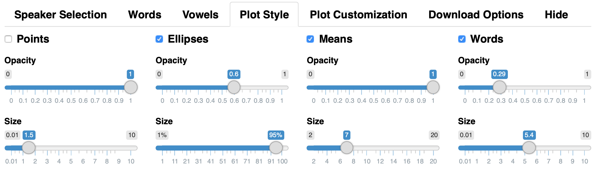
The Plot Customization tab lets you change things like the zoom, axes, aspect ratio, and (some control over) colors. I’m hoping to add more options to this tab in the future. With these two tabs, I feel like you can make a lot of very different plots, all based on the same data, which is pretty cool.
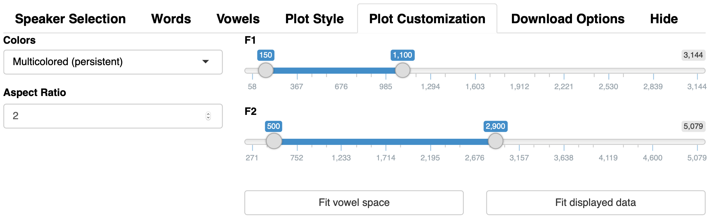
Finally, the Download Options is the newest tab. You could always take a screenshot, but you’re limited to how your web browser displays the image and your computer’s screensize. In this tab, you can set the height, width, quality, and format, so you can make publication-quality images. In fact, the plots in this blog post were all created using this download button, so you can recreate them yourself!
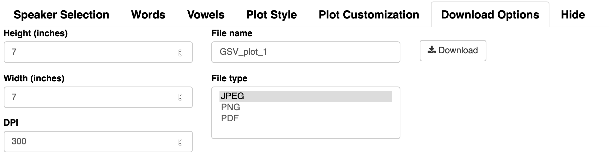
So that’s it! My goal in creating these options was to allow users to create any type of plot using any conceivable subset of DASS, and I think the GSV does a pretty good job at that. Here’s a quick gallery of six different plots:
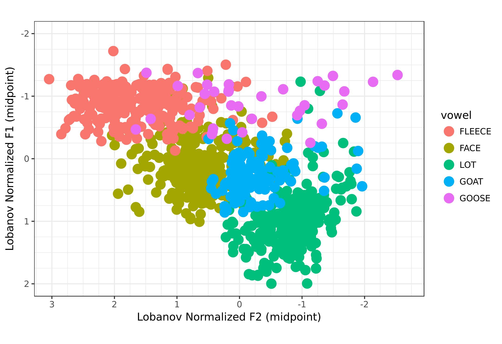 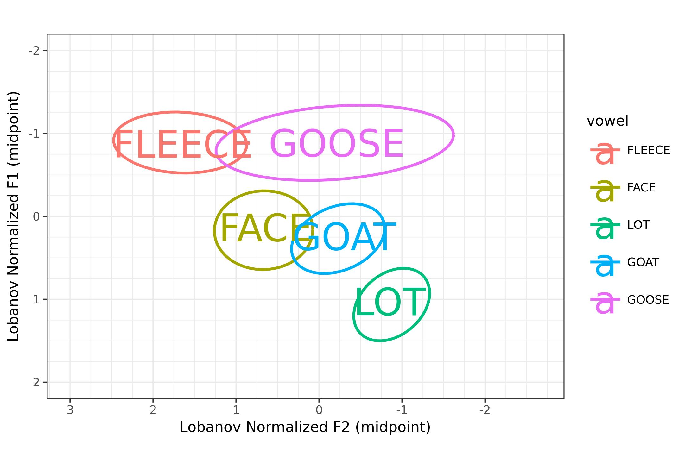 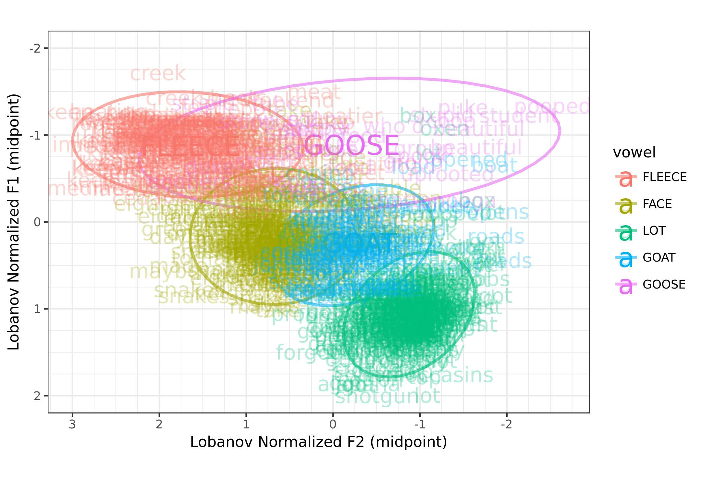 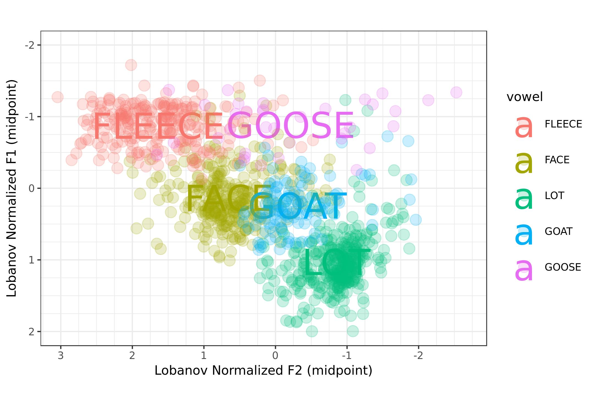 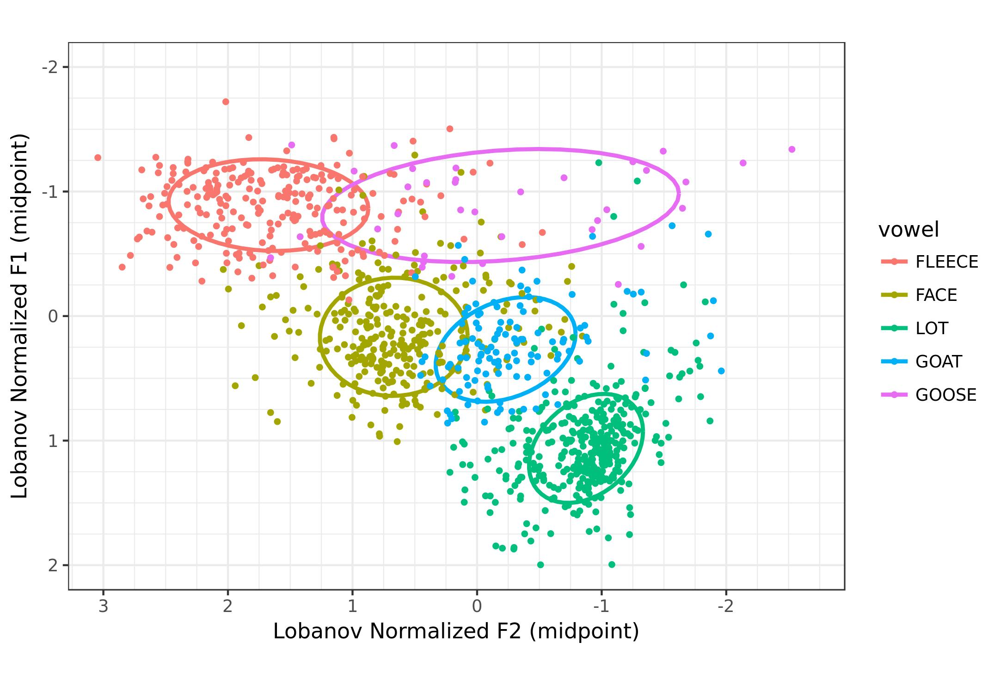 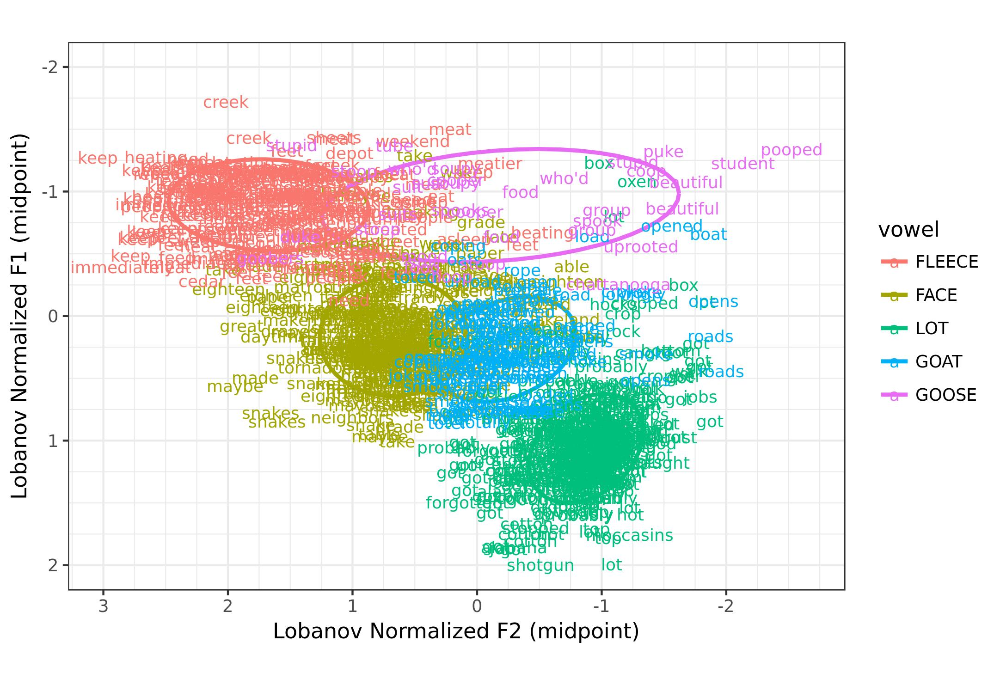
Point Pattern Analysis
In the second half of the presentation, Bill Kretzschmar took over and discussed using point pattern analysis in the visualization of vowel data. He has found that when you overlay a grid on the F1-F2 space (just as geographers do with geospatial data), you can see the central tendency of vowels by which “cells” in this new grid are the densest. They roughly follow the 80-20 rule, with a few cells being heavy concentrated, some having some tokens, and many with very few. Here’s just one image of a Georgia man’s
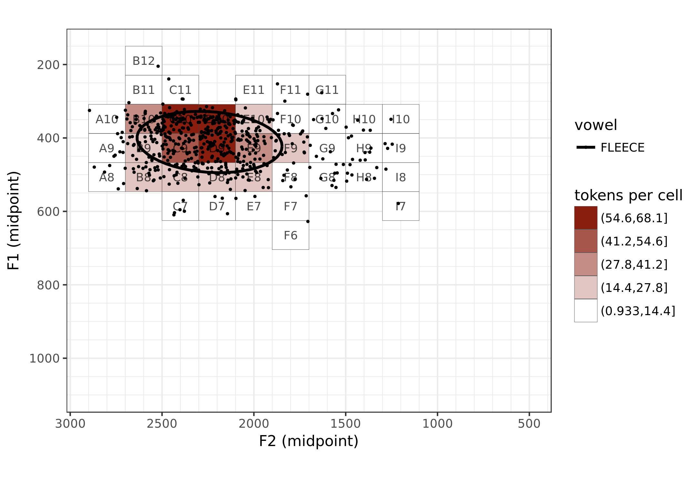
Bill finds that if you plot them in order of density, the resulting curve is an asymptotic hyperbolic curve, or just A-curve for short. And, as it turns out, this distribution is fractal in nature, so regardless of how much you subset the data, you’ll find the same distribution. The GSV makes it easy to see this distributions interactively.
At the very end, we hinted at some additional visualizations we’d like to develop to make it easier to view trajectory data, taking advantage of a third-dimension in the plot itself. Hopefully, we’ll have more to say about that in the future.
Conclusion
So that’s our presentation! We’ve got a lot of data and we needed lots of plots to make sense of it all. Instead of saving plot after plot, we decided an interactive Shiny app might be a better option. Most importantly, I think we’ve learned a little more about how language works because of the size of the data and the interactivity of this tool.